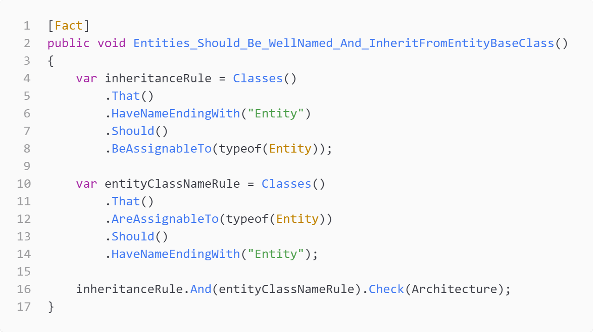

Qui sommes nous ?
Qui sommes nous ?


Mise en situation
Mise en situation
Disclaimer : Cette mise en situation est imaginaire.
Les personnes et les événements figurant dans cette présentation sont purement ficitfs.
ou presque ...
L'équipe
- 1 "feu" archi logiciel
- 1 lead-dev francophone
- des devs juniors anglophones
Le contexte
- Multilangues
- La doc c'est le code
- Des merges requests quotidiennes
Comment optimiser le process de code review ..?
Objectif :

Objectif :

Objectif :

Quels axes ?
- Lisibilité du code
- Conformité du code aux standards
- Pérénité du code et de l'architecture du projet dans le temps
Quels axes ?
- Lisibilité du code
- Conformité du code aux standards
- Pérénité du code et de l'architecture du projet dans le temps
Et si on utilisait des tests unitaires ?
Les tests unitaires késako ?


Les tests unitaires késako ?
En programmation informatique, le test unitaire [...] est une procédure permettant de vérifier le bon fonctionnement d'une partie précise d'un logiciel ou d'une portion d'un programme (appelée « unité » ou « module »).
En programmation informatique, le test unitaire [...] est une procédure permettant de vérifier le bon fonctionnement d'une partie précise d'un logicielou d'une portion d'un programme (appelée « unité » ou « module »).
Une partie précise d'un logiciel ?
Une partie précise d'un logiciel ?


Et l'architecture de notre code ?
Conditions :
-
Un langage permettant la réflexion


-
Une librairie permettant d'abstraire la partie réflexion

- Une bonne connaisance de l'architecture du projet
Cas 1 - dépendances entre couches
Cas 1 - dépendances entre couches
Postulat : Common doit être autonome vis à vis des autres couches

Cas 1 - dépendances entre couches
Postulat : Common doit être autonome vis à vis des autres couches

Cas 1 - dépendances entre couches
Postulat : Common doit être autonome vis à vis des autres couches

Cas 1 - dépendances entre couches
Postulat : Common doit être autonome vis à vis des autres couches

Cas 1 - dépendances entre couches
Postulat : Common doit être autonome vis à vis des autres couches

Cas 1 - dépendances entre couches
Postulat : Common doit être autonome vis à vis des autres couches


Cas 1 - dépendances entre couches
Postulat : Common doit être autonome vis à vis des autres couches

Cas 2 - construction des services
Postulat : Un service applicatif doit être dans la couche Bll, il ne doit pas pouvoir être hérité et son nom doit terminer par "Service"


Cas 3 - entités
Postulat : une entité doit hériter de la classe de base Entity et son nom doit terminer par "Entity"
Il ne manque plus que la CI non ?
Et un peu d'imagination / réflexion pour posser les bonnes règles
Conclusion !
Conclusion !
- S'adapte à toutes les tailles d'équipe
- Garantie l'architecture logiciel
- Ne remplace pas un linter
- Ni la review, mais la valorise !